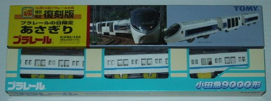

| STIC | : | というわけで、ひさしぶりのルディア形式です。 |
| ルディア | : | なにが「というわけ」なのか、さっぱりわかんないわよ。 |
| STIC | : | なにぃっ!? POLから来たmailを読んでおらんのかっ! |
| ルディア | : | 読んでいるわけないでしょっ!! |
| STIC | : | そうかっ!!! |
| ばき。 | ||
| ソフィア | : | やかましい。 |
| STIC | : | 医者は、どこだ……それわそーと、うおおおっ! Windows XP搭載のFIVA、萌えるぜっ! |
| ルディア | : | そこはかとなく、字が違くない? |
| ソフィア | : | そこはかとなく、じゃないような……。 |
| アリステア | : | いいえっ! 世界征服の第一歩は練馬から、と昔から相場が決まっているものですわっ! |
| ルディア | : | また、はじまっちゃったよ。 |
| ソフィア | : | 最近、こんなキャラばっかりよねぇ。 |
| STIC | : | はっはっはっ。ルディア形式はひさしぶりだから、『最近』もなにもないんだぞ。 |
| ばき。 | ||
| ソフィア | : | やかましいっての。 |
| アリステア | : | でも、Linuxが起動するBモードは確かに魅力的ですわぁ～。 |
| ルディア | : | ア、アリステア? |
| アリステア | : | ふふふ……チェキ、ですわ。 |
| ソフィア | : | だーれーかーたーすーけーてー。 |
| フィーリス | : | みんな、お待たせさま。あら、どうしたの? |
| ソフィア | : | アリステアが! アリステアがっ!! |
| STIC | : | 衛兵に発射されてしまいました。 |
| ばき。 | ||
| ルディア | : | とゆーのは、おいといてー。 |
| アリステア | : | フィーリスさん、おひさしぶりです。 |
| フィーリス | : | アリステアが、どうかしたの? |
| STIC | : | どーもしないですよ。ねー。 |
| アリステア | : | ねー。 |
| フィーリス | : | 確かに、おかしいわね。 |
| STIC | : | ちっ。 |
| ルディア | : | 「ちっ」ぢゃなひ! なんちて。 |
| ソフィア | : | あれ? 誰か来たよ。 |
| シャルロット | : | こんにちは。 |
| エルミニア | : | こんにちは～。 |
| STIC | : | もう夜だぞ。あいさつぐらい、ちゃんとしろよ。 |
| ばき。 | ||
| ソフィア | : | あんたわ、シーマンかーい! |
| エルミニア | : | あ、どうぞ、おかまいなく～。 |
| STIC | : | って、食いに走ってるな～……はっ! この展開は!? |
| ルディア | : | ま、まさか……。 |
| ソフィア | : | 忘年会モード!? |
| アリステア | : | 大変。宴の用意なんて、全然していないわ。 |
| ルディア | : | いやだから、そうじゃなくてぇ～。 |
| STIC | : | そーいやーYahoo! BBは、とっても楽しいことがおこっているみたいですな～。 |
| フィーリス | : | 話が、ますます収拾つかなくなってきたわね。 |
| STIC | : | そーそー。 |
| ルディア | : | そうじゃなくて、ここの話がってことだと思うけど。 |
| ソフィア | : | ちょっとちょっと、話をまとめてよ。 |
| STIC | : | もー、わけがわかりませーん。 |
| ルディア | : | あんたが言うか……。 |
| STIC | : | さ、先生。そろそろ、しめてくだせぇな。 |
| アリステア | : | どーれ。 |
| ソフィア | : | ああ、アリステア。(;_;) |
アキバに行って、中古のVAIOを買ってくる。VAIO NOTE 505V/CBP(PCG-505V/CBP)。祖父地図で、74,300円。N505シリーズとかあったんだけど、迷ったときは初志貫徹。バッテリのゴム足が、片方とれそう。しくり。展示されているときってバッテリは外されているから、わからないんだよねえ。とゆーか、確認するの忘れた。新しいACアダプターが使いにくくて、しおしお～。この機種は、CD-ROMドライブとOffice 2000がついてくるところがいいんです、ハイ。まだ、セットアップは全然やっていない。WinAdvisor 2は、実家だだだ。
前の弐号機(PCG-505X)が、2回目の電源投入で起動しちゃったりして……んが正常に戻ったわけではないし、そんな状態で使い続けるわけにはいかない。結局、新しいノートPCは必要だったのだ……ん～、ThinkPad 570でもよかったかも(をひ)。上蓋が、少し汚れている。とゆーか、スリ傷? 旧弐号機の方が、キレイだぞ。そのかわりパームレストのあたりがはげかかっているが、これわ経年劣化だ。比べてみた感じでは、なんかムリして薄くしないでもよかったんぢゃないの? という気がした。とにかく早いとこ、セットアップしないと。
2001/12/05VAIO NOTE 505VのACアダプターはお気に召さないので、以前のACアダプターを使い続けることにしました。セットアップは、ほぼ完了。バッテリはゴム足が片方とれそうだし、以前のバッテリは寿命なのか挙動不審なので新しいのを買ってもいいかも。買うといえば、CFとIXY DIGITALの予備のバッテリも欲しいかも。あと、実家用にDVR-103BP(B's Recorder GOLD同梱)とか。でもって、Other WWW Siteのリンク切れとかをチョコチョコ直してみたり(含む、追加と削除)。やーそれにしても、Yahoo! BBは楽しすぎますな。
2001/12/10「カードキャプターさくら 知世のビデオ大作戦」は、専用(?)サイト(リンク切れ)まであるみたいですな。嗚呼、さくらちゃん超絶かわいいですわぁ～。ところでGIGAMOが欲しい欲しいと書きつつ、ちっとも買っていない……というか、ホントに買う気あるのか>をれ。とにかく、いま買うんだったらSMB-2300NA(富士通のMOドライブ)ですかね。嗚呼、2.3GB超絶欲しいですわぁ～。Exciteのオークションで落札したSII MC-6550を、ようやく受け取る。PIAFS 2.1(64Kbps)で接続すると、とっても快適。こりわカトリーヌとピエールばりに病み付きですぜ、旦那。
2001/12/12| STIC | : | ガーソ。ハンドルネーム占い(リンク切れ)で占ってみたら、凶だった。 |
| ルディア | : | きゃはは。あたしは、どうだった? |
| STIC | : | 軍人系で呼ぶといいらしいので、これからはSTIC大尉と呼んでくれたまへ。 |
| ルディア | : | いや、そんなことはどーでもいーから、あたしはどうだったの? |
| STIC | : | ルディアは、フェイスマークをつけると大吉らしいぞ。「ルディア(-_-x)」だって。ゲラゲラ! |
| ルディア | : | (-_-x)。 |
| STIC | : | それにしても、新しいLOOXは何気によさげぢゃないか。 |
| アリステア | : | まあ。また買うんですか。 |
| STIC | : | いや、買わんけどね。富士通だし。ちなみにアリステアは中吉だったぞ。「お似合いですよ、その名前」とか言っていたぞ。 |
| アリステア | : | まあ。(*^_^*) |
| STIC | : | 最近、「ナジカ電撃作戦」と「ココロ図書館」を観る機会が多い。多いと言っても、まだ2,3回なんだけどね。 |
| ソフィア | : | パンツ、見えまくりのやつね。 |
| STIC | : | 何も考えずに観られるのが、いいかも。後者は、ちょっとノーミソがつらいものがあるかも。 |
| ソフィア | : | なんだか、よくわかんないけど。 |
| アリステア | : | 「よくわか」ですもの、ね☆ |
| フィーリス | : | なんだか、楽しそうね。 |
| STIC | : | をを、ボンゴレーノ・フィーリス! |
| フィーリス | : | は? |
| STIC | : | いや、ちょっと洒落た洋風にすると大吉って書いてあったもんで。 |
| フィーリス | : | はあ。 |
| STIC | : | あと、「フィーリス大佐」とか「伝説のフィーリス」とか「凄腕フィーリス」とか「かわいいフィーリス」とかもいいそうです。 |
| フィーリス | : | 最後のそれ、いいわね。 |
| ソフィア | : | えっ!? |
| フィーリス | : | コホン。 |
| STIC | : | やっぱり、フィーリス大佐ですかね。ナチの軍服を来て、ムチでセルディをピシピシ! と。 |
| フィーリス | : | そういう趣味は、ありません。 |
| STIC | : | ちなみに、フィーリス自体は末吉でした。 |
| ルディア | : | ……(-_-x)。 |
XHTMLを色々調べると、うちのSiteの移行はちぃと無理っぽい。そもそもHTML 4.01に準拠していないので、XHTML 1.0 Strictなんてはるか霞のかなたって感じ。で、思ったよ。別に、いいやって←をひ。ってゆーか、Netscape 4.xなんて使っているからいかんのか。確かに、スタイルシートはダメダメでんな。でも、mozillaやNetscape 6.xを使う気にはなれんのよ。ましてや、Internet Explorerなんてトンデモない。preタグの表示とフォントを、なんとかしてくれれば……という気もしないでもないんだが。
ってゆーか、preタグなんて使うなってか。まーそれが直った(?)としても、あのセキュリティの問題の多さには対応できまへん。Netscapeだって似たようなもんかもしれないけど、完璧なソフトウェアはないので相対的によければいいんです(意味不明)。とりあへず、アンカータグのid属性は(Netscape 4.xでは)使えないことが判明したので、戻してしまいますです。だってさー、アンカータグのmailtoも使っちゃダメなんだぜ。そもそも、HTML 4.01からダメらしいんだが、それってなぁ……。みんなは、一体どーすんだろ?
2001/12/18外付けタイプだったら、ロジテックのLMO-2300FU2ですかね。でも、こいつわI/FがIEEE1394とUSBしかないので、現零号機(EVA-00)には接続できないんだよね。っつ～か、実家のPCに接続することばっかり考えているな。全然関係ないけど、これ(日本IBMのデザイン展覧会「IBM Design from Japan」開催)、私の足元ですぜ、旦那。8階分下に降りると、ThinkPadの真上に到着するかも。あとで見に行くべー(湘南弁)。そーいや、劇場版セラムンがDVD BOXで出るみたい。2002/03/21に、4枚組(＋1枚ボーナスディスク)で15,000円。全部LDで持っているから、買わない可能性が高いけど。
11/24に買ってもらった、あさぎりとOER 9000形の限定プラレール。あさぎりは去年のプラレールの日限定発売のものと思われるが、小田急百貨店に残っていたものを保護。OER 9000形は大山へ登山に行ったときに乗っているのでいいとしても、あさぎりは乗ってもいないのに買ってしまったので急いで乗らないと(んざそら)。
